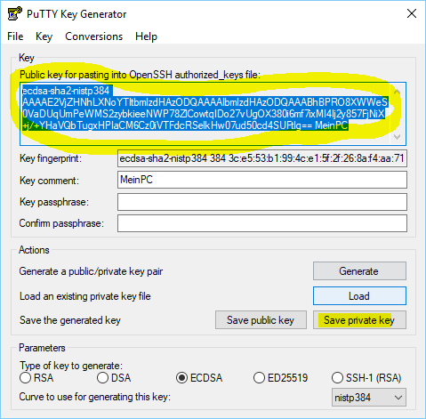

Mit Hilfe der Secure Shell (SSH) kann mann sich mit der Console des Raspberry Pi verbinden und Linux-Befehle auf dem pi ausführen.
Um sich mit dem pi zu verbinden, ohne ein Passwort eingeben zu müssen, muss Authentifizierungs Schlüsselung anlegen und den System bekannt machen. Hierzu gibt es je Authentifizierung einen öffentlichen und einen privaten Schlüssel.Der öffentliche Schlüssel wird auf dem pi hinterlegt werden, wohingegen der private auf dem PC/Gerät verbleibt mit dem die Verbindung zu pi aufgebaut werden soll.
Zum generieren der Schlüssel gibt es verschiedene möglichkeiten Die einrichung erfolgt in zwei Schritten: 1. Schlüsselpaar erstellen 2. Schlüssel verteilen
In der Programmsammlung von putty ist auch ein Key-Generator enthalten ‘puttygen.exe’. Mit diesem lässt sich auf einfache weise ein Schlüsselpaar erstellen. Also exe herunterladen und starten.
Den Schlüsseltyp auswählen (ECDSA und nistp384) und auf Gererate klicken.
Anschließend wird die erstellung der Schlüssel gestartet. Puttyken verwendet dabei die Mausbewegung als Zufallsgenerator. Daher muss der Mauszeiger im oberen bereich hin und her bewegt werden.

Zum Schluss wird mit Save private key der private Schlüssel auf der Festplatte abgelegt.
Es ist sehr hilfreich zuvor unter Key comment den Rechnernamen von dem die Verbindung aufgebaut werden soll einzutragen. Dies erleichter später die Unterscheidung der einzelnen Keys.
Im oberen Teil sehen wird bereit die öffentlichen Schlüssel. Diesen kopiert man ab besten schonmal mit STR+C in die Zwischenablage, dann geht es mit dem zeiten Teil weiter.
Zunächst müssen wir uns auf dem pi klassisch mit Benutzername und Password anmelden. In unserem Fall melden wir auns also als pi an. Für diesen Benutzer müssen wir zunächst in seinem Homeverzeichniss einen Ordner für die erlaubten Schlüssel anlegen. Dies ist bei Raspian immer da versteckte Verzeichnis .ssh im Homeverzeichnes.
mkdir -p ~/.ssh;
chmod 700 ~/.ssh;
touch ~/.ssh/authorized_keys;
chmod 600 ~/.ssh/authorized_keys;
Beim letzten befehl muss der mittlere Teil “ecdsa-sha-nistp384 AAA…==MeinPC” durch den öffentlichen Schlüssel aus puttyken ersetzt werden.
echo ecdsa-sha2-nistp384 AAAAE2VjZHNhLXNoYTItbmlzdHAzODQAAAAIbmlzdHAzODQAAABhBEKt1cRt+2PhzaqYT2fsCUv7gQKqGImPZtR7KpyE+KaJi+a4IHVL0nNshl4IcngTKG6aDG6H0w217/22YN9szO5cMWz6jUhVpZK6I3d/IX9fiT/gFri2UD3S8UQnFUw8GA== OlafsHomePC >> ~/.ssh/authorized_keys;
Nun Teilen wir noch putty mit, das es bei der Authentifizierung die private Schlüsseldatei auf unserem Rechner verwnden soll.
TODO: Hier bild einfügen!!